Frutas Manzana 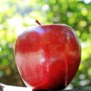 Esto es una manzana Pera Esto es una pera 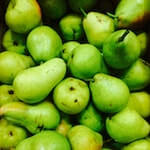 Esto es una pera Piña Esto es una Piña Melón 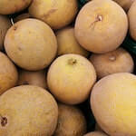 Esto es un melon Patilla 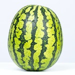 Esto es una patilla
Verduras Col 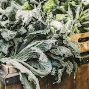 Esto es una col Cebolla 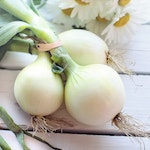 Esto es una cebolla Berenjena 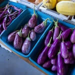 Berenjena Pepino 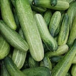 Pepino Tomate 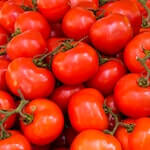 Tomate
Recetas Sopa de pescado 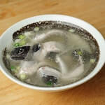 sopa dee pescado espagueti blanco con tocino 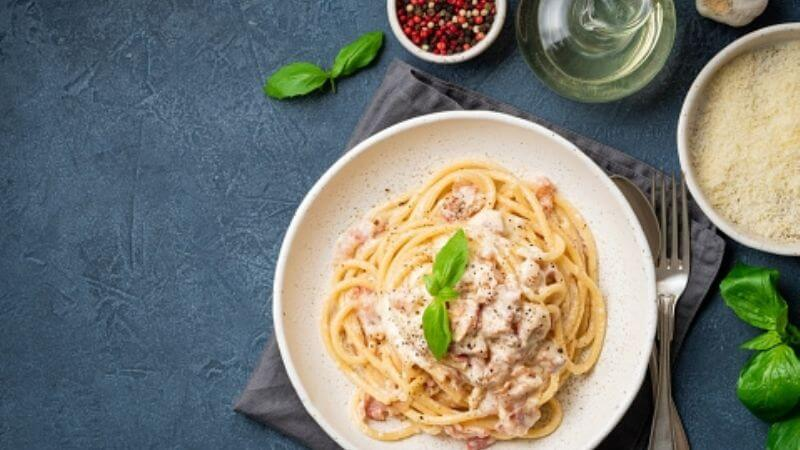 espagueti blanco bizcocho de maicena sin azúcar, gluten ni lactosa 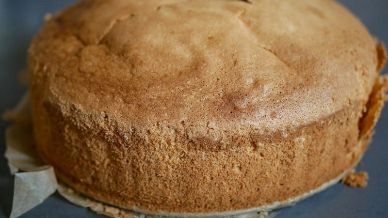 Bizcochito